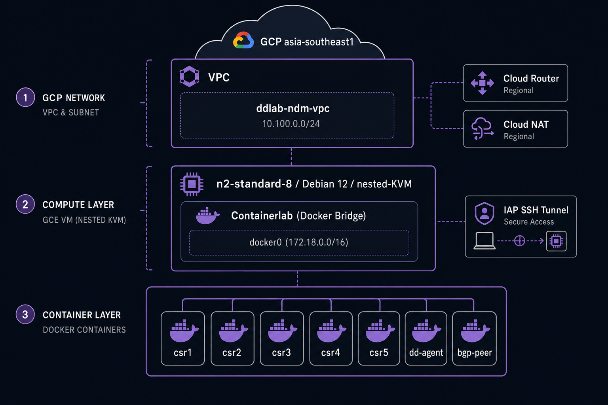
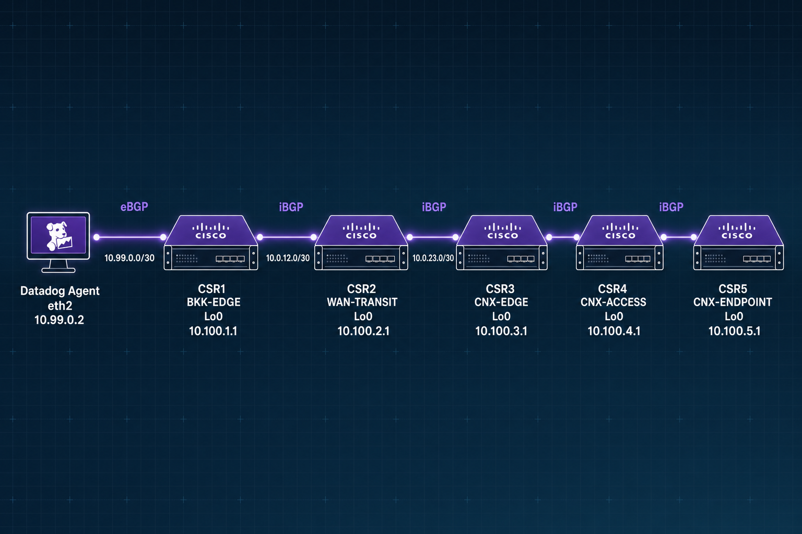
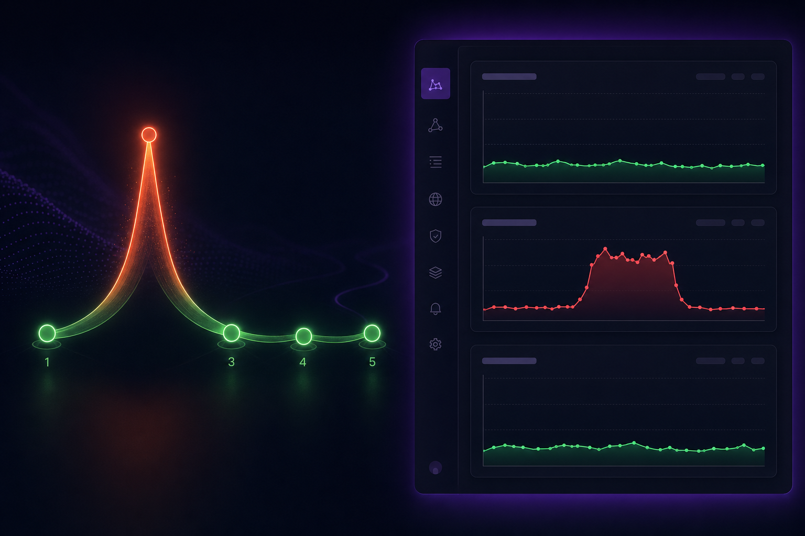

Five-router multi-hop chain · real Cisco IOS-XE · destroy → apply → working in ~12 min
Terraform + bootstrap scripts that spin up a self-contained NDM + NetworkPath lab on GCP. One terraform apply, one qcow2 upload, fifteen minutes — and you have five real Cisco CSR1000v routers polled by SNMP, plus 8 NetworkPath traces with up to five router hops. Identical agent, identical SNMP profiles, identical UI to a real production deployment.
Network Observability customer demos, POVs, scale conversations, "show me what NDM looks like" calls.
Most demo orgs only show 1-hop reachability. This lab shows hop-by-hop RTT across 5 real routers, identifying which hop is slow.
Single GCE VM, no public IPs, IAP tunnel SSH. terraform destroy tears it all down. 2 GB GCS cache survives for next apply.
terraform apply → VM, VPC, NAT, GCS cache bucket. ~75 s.
One-time gsutil cp of the licensed CSR1000v image to the cache bucket.
Startup script builds vrnetlab image, caches the tarball, deploys lab.
5/5 SNMP [OK] · 8/8 NetworkPath [OK] in ~15 min.
5 CSRs in NDM /devices · 8 NetworkPath traces with 1-5 hops · live SNMP polling · BGP table · CDP topology map · interface throughput.
Inject latency, packet loss, BGP flap, link-down, CPU stress, or 100×-cap traffic — watch alerts fire and NetworkPath light up the bad hop within 60s.
Same Terraform repo runs in the customer's GCP. They get an unsupervised POV that mirrors a real production agent + profile setup.

8 vCPU · 32 GB · nested-KVM · Debian 12 · 200 GB SSD. Five CSR1000v VMs at 4 GB each + Docker overhead = ~25 GB used.
10.100.0.0/24 with no public IPs. Outbound via Cloud NAT, inbound SSH only via Google IAP tunnel. Customer-grade safe-by-default.
Stores the licensed CSR1000v qcow2 + the pre-built vrnetlab Docker image. Survives terraform destroy so the next apply is ~10 min, not ~25.

A direct veth from dd-agent eth2 to CSR1 Gi4 on 10.99.0.0/30 bypasses vrnetlab's SLiRP-NAT'd Mgmt-intf VRF — without it, ICMP probes to 10.100.X.1 get NAT'd back to the bridge.
FRR eBGP (AS 65001) peers with CSR1 (AS 65000). CSR1↔CSR5 are full iBGP with belt-and-suspenders static routes for fast cold-boot convergence.
All five CSRs polled via SNMPv3 (auth: SHA, priv: AES) using the bundled cisco-csr1000v profile through the core loader.
Agent reads instances.yaml (or autodiscovers a CIDR).
For each device, agent issues GetRequest sysObjectID.0 and matches against a vendor profile YAML (200+ bundled — Cisco, Juniper, F5, Palo Alto …).
Profile declares which OIDs to walk. Agent walks them every min_collection_interval (default 15s).
"For your fleet, we already have profiles for the top 200 vendors. For the remaining 5%, drop a YAML in profiles/ and the core loader picks it up — no agent rebuild."
Metrics, tags, metadata, interface state, BGP table, CDP neighbors all flow into the same backend as APM / Logs / Infra.
Fleet inventory at /devices with per-device drill-downs, topology map, geomap, monitors.
Agent reads network_path.d/conf.yaml — list of hostnames/IPs to reach.
For each, agent's system-probe sends N parallel TCP / UDP / ICMP traceroutes per check run.
Each probe records every hop's IP, RTT, and reachability as a structured event.
Hops are enriched with reverse-DNS / NDM device match, and time-series stored in Datadog.
"Avg RTT to hop 3 over last 24h?", "Reachability dropped <99%?", "Did the path change?" — answered at /network/path.
Answers the "which hop is slow?" question that historically required a war-room call to the network team and a manual traceroute from a jumphost.
| Customer question | Product that answers it |
|---|---|
| "Is the device healthy?" — CPU, memory, fans, interface counters, BGP state | NDM SNMP polling, per-device profile |
| "Is the path through these devices healthy?" — RTT, loss, hop changes | NetworkPath traceroute-as-metric |
| "Is the link between two specific devices saturated?" | NDM ifIn/Out octets + NetFlow top-talkers |
| "Did routing converge after that change?" | NDM BGP table + NetworkPath path-change events |
| "Did my app's slowdown coincide with a network issue?" | Cross-product correlation: APM + NDM + NetworkPath in one dashboard |
env, service, team, device_namespace, site — uniform across every product.
Standard Datadog monitors (Terraform-managed) on every metric — no separate "network alerting" stack.
NetworkPath widget next to APM service map + DBM panel on one dashboard. One tab.
Notebooks, SLOs, on-call rotations, runbooks, IaC monitors — all already built. Network just plugs in.
When a customer's APM, infra, network, security, and synthetic monitoring all live in one platform, the question "is this OUR problem?" has one place to look — and the answer is faster than any war-room dial-out.

Pre-injection — agent → csr5 (5 hops):
Post-injection (same path):
Latency isolated at hop 2 (CSR2 Gi2). Hop 1 stays clean.
A bundled loadtest.sh uses hping3 to overload CSR2's data-plane shaper and posts Datadog events at start/end so the test window annotates NetworkPath graphs automatically.
| Mode | Rate | vs cap | Effect |
|---|---|---|---|
steady | ~80 Kbps | Under | Flat 0% loss |
trickle | ~150 Kbps | 1.5× | Sawtooth latency, 0% loss |
burst | ~800 Kbps | 8× | Loss + spikes |
flood | host CPU | 100×+ | Heavy loss |
overload | ~58 Mbps | 800× | >99% loss |
Each run posts LoadTest START + LoadTest END events tagged scenario:loadtest mode:<mode> target:<target> — they appear as flags on every NetworkPath graph that overlaps the window.
steady — flat ~1-3ms RTT, 0% loss. Baseline showcase.
trickle — sawtooth latency 2-9× baseline, 0% visible loss. Brownout signature.
burst — clear spikes, 10-30% loss. Customer pages on it.
overload — >99% loss for 60s, 1-2 min recovery tail. Total outage.
conf.d/snmp.d/conf.yaml [setup docs]conf.d/network_path.d/conf.yaml [setup docs]datadog.yaml [scanner docs]datadog.yaml [traps docs]terraform destroy && apply = working lab in ~12 minterraform destroy — by designGCS image-cache bucket (~2 GB qcow2 + tarball) — force_destroy = false by default. The bucket is the reason the next apply takes 12 min, not 25.
VM, VPC, subnet, Cloud Router, Cloud NAT, firewalls, IAM binding, boot disk. destroy errors cleanly on the bucket — that's the safety net firing.
terraform destroy -var image_cache_force_destroy=true wipes the cache too. Use when rotating qcow2 or starting fully fresh.
Reproducible · fault-injectable · customer-safe · ~12 min from zero to working
ndm/ddlab-automation/
README.md — concepts & integrations
NETWORK-OBSERVABILITY.md — playbook
TROUBLESHOOTING.md — gotchas
Show & tell — walk through live data
Fault inject — break it, watch alerts
Hand-off POV — customer clones & runs in their org
1. Read README + topology
2. terraform apply in your sandbox project
3. Practice Scenario 1 once before customer call
4. Schedule a 30-min demo with prospect
Slack #network-observability-se for questions, demo scheduling, & customer-specific topology requests. PRs welcome to scripts/startup.sh.tpl for new vendors / scenarios.
NDM · NetworkPath · SNMP profiles · Traps · NetFlow · CNM